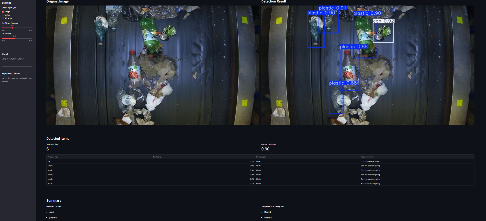

What it does
This application detects recyclable materials from uploaded images, uploaded demo videos, and live webcam input. It then returns predicted classes, confidence scores, annotated visual output, and a simplified sorting recommendation.
Fully Deployed • Computer Vision • Streamlit
A modular computer vision application built to detect recyclable waste items and map them into practical sorting categories using a custom-trained Ultralytics YOLO model and a Streamlit frontend.
Overview
This application detects recyclable materials from uploaded images, uploaded demo videos, and live webcam input. It then returns predicted classes, confidence scores, annotated visual output, and a simplified sorting recommendation.
I wanted to create a portfolio-ready computer vision project that combined model training, dataset preparation, inference logic, and a user-facing interface in a way that felt practical and easy to demo.
Python, Ultralytics YOLO, Streamlit, OpenCV, Pillow, and streamlit-webrtc.
Project Media

Implementation
The model was trained on a grouped version of the WaRP-D dataset. Rather than keeping all fine-grained labels, the data was remapped into broader recyclable categories to make the application more practical for sorting use.
Two YOLO pipelines were tested before selecting the final deployment model. The final choice was a YOLOv8m-based model because it produced the best overall balance across validation metrics and improved weaker categories such as can and canister.
The interface was designed around multiple input modes to make the demo more flexible and realistic.
Detection outputs were mapped into broader sorting recommendations to make the results more understandable for users. For example, plastic and detergent items can both be mapped into plastic recycling guidance, while cans map into metal recycling.
Results
Dataset preprocessing, grouped label design, YOLO training, validation comparison, and final model selection.
Connecting a trained vision model to a frontend interface for interactive testing and visual feedback.
This project shows modular structure, deployment thinking, model trade-off awareness, and the ability to turn technical work into a usable demo.
Challenges